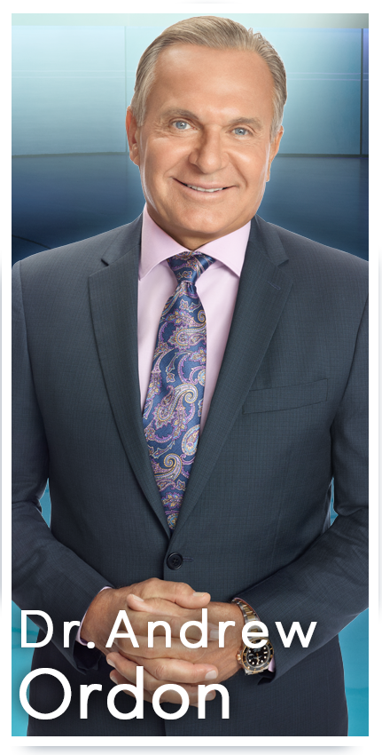

NBC’s The Doctors: Dr Drew Ordon
Every once in a while you’ll meet someone who changes your life – in SO many ways. Such is the case with Beverly Hills plastic surgeon, Dr Drew Ordon. I initially met him when I was hired to coach him in his Palm Springs estate as he was preparing to co-host his first infomercial. Dashing and charming – he was a natural and we had instant chemistry. He then asked me to co-host another show with him and ultimately as he landed the daytime Emmy award winning series on NBC – The Doctors – I would launch SpinGym with him – so blessed in every way — doc, you’re the best!

Dr. Andrew P. Ordon is an Emmy® -nominated co-host of the award-winning talk show The Doctors. For over three decades, Dr. Ordon has been an acclaimed surgeon in the areas of aesthetic, plastic and reconstructive surgery with private practices in Beverly Hills and Rancho Mirage, California.No stranger to television, Dr. Ordon has been featured on television shows and networks including Dr Phil, The Early Show, Rachael Ray, 20/20, Entertainment Tonight, 48 Hours, BBC News, CNN, NBC News and ABC News. He has been quoted in such publications as Allure, Mademoiselle, Redbook, Glamour and Prevention Magazine. Dr. Ordon is also the author of Revealing the New You, A Guide to Plastic Surgery, Everything You Always Wanted to Know About Plastic Surgery, and most recently, Better in 7: The Ultimate 7-Day Guide to a Better You. He also contributed to one of the most respected textbooks in the field of plastic surgery, Facial Aesthetic Plastic Surgery.
One of Dr. Ordon’s proudest accomplishments has been his role as a founding member of the Surgical Friends Foundation, comprised of a group of doctors who offer complimentary reconstructive surgery to people in the U.S. and abroad who cannot afford medical treatment. Many of these patients suffer from birth defects, physical abuse and burns, among other adverse conditions. He has traveled to Haiti on three occasions to help in medical relief efforts following the devastating earthquake in 2010. In addition, Dr. Ordon has performed cleft lip and palate repairs in such places as India on behalf of Smile Train, which provides free cleft surgery to hundreds of thousands of poor children in developing countries.
Dr. Ordon is a Phi Beta Kappa graduate of the University of California at Irvine, where he graduated with honors in biological sciences and was the recipient of a National Science Grant for his research in neurophysiology. He then received his medical degree from the USC School of Medicine with honors in medicine. He completed his general surgery training at USC/Los Angeles County Medical Center, followed by a residency program in head and neck surgery at White Memorial/Loma Linda University. Dr. Ordon then completed a second residency training program in plastic and reconstructive surgery at the prestigious Lenox Hill Hospital/Manhattan Eye and Ear Infirmary Program in New York City. Affiliated with Cornell University and NYU, this program is recognized as one of the oldest and most renowned centers for aesthetic, plastic and reconstructive surgery in the world.
Dr. Ordon is currently an assistant professor of plastic surgery at Dartmouth School of Medicine at The University of Connecticut. Formerly, he was assistant professor of surgery at both UCLA School of Medicine and The New York Medical College. His hospital affiliations include Cedars-Sinai Medical Center in Los Angeles and Eisenhauer Medical Center in Rancho Mirage, California. Dr. Ordon is a member of the American Society of Plastic Surgeons, the American Society for Aesthetic Plastic Surgery, the International Society for Aesthetic Plastic Surgery, the Double Boarded Society of Plastic Surgeons and the California Society of Plastic Surgeons. In addition, he is a diplomat of the American Board of Plastic Surgery, the American Board of Otolaryngology & Head and Neck Surgery, the American Board of Cosmetic Surgery and the National Board of Medical Examiners. He is a fellow of the American College of Surgeons, the International College of Surgeons and the American Academy of Facial Plastic and Reconstructive Surgery.
Born in Chicago and raised in Long Beach, CA, Dr. Ordon and his wife divide their time between Los Angeles, New York City and Rancho Mirage, CA. They have two children who are pursuing careers in medicine. In his spare time, Dr. Ordon enjoys surfing, skiing, playing golf and tennis, boating and travel.
The Doctors, now in its seventh season, won the 2010 Emmy® Award for “Outstanding Talk Show/Informative” and has been nominated five times in the category. In addition, Dr. Ordon and his co-hosts on The Doctors received consecutive Emmy® nominations for “Outstanding Talk Show Host” in 2011 and 2012.

Free · live on Zoom every Sunday
The Secret Pitch Formula
Join Forbes live for the Pitch Secrets Masterclass. Over 80,000 people have learned the 7-second hook, the three pitch patterns behind $2.5 billion in sales, and how to close without sounding salesy. Free, with a gift worth $500 for registering.
Sundays, 2 p.m. PT / 5 p.m. ET. Registration and the Zoom link are at pitchsecretstraining.com.